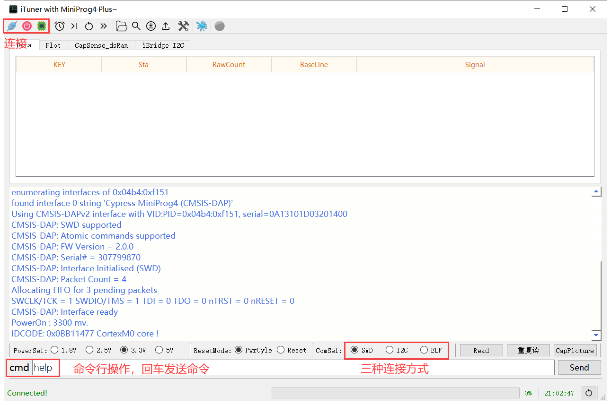
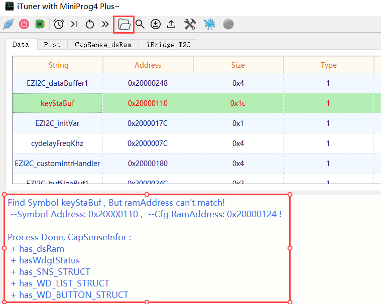
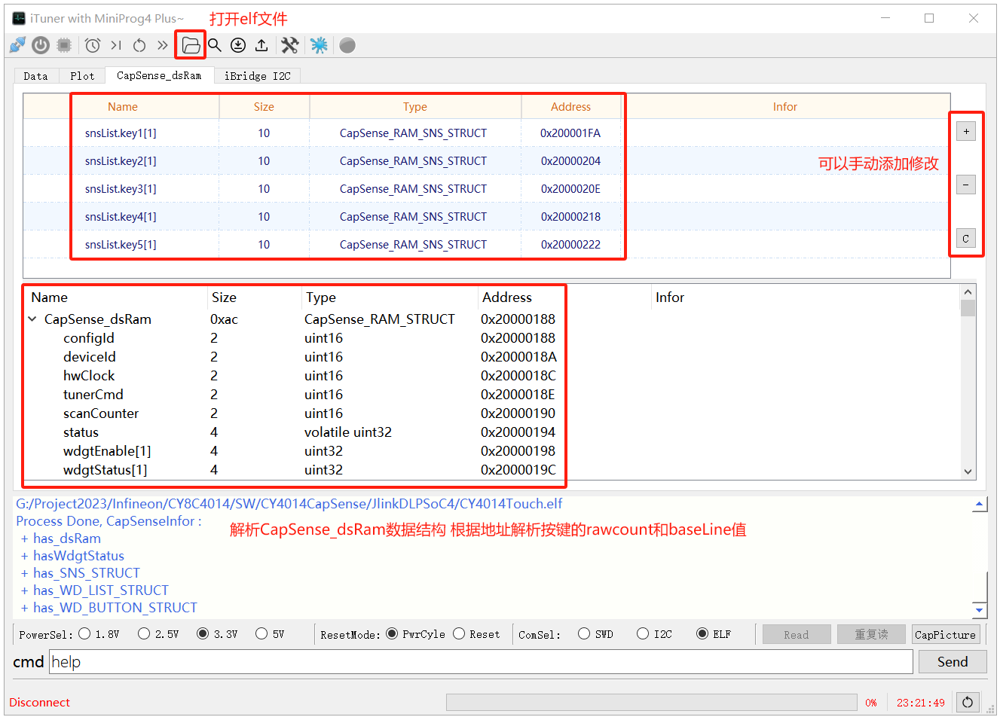

简单介绍
欢迎并感谢小伙伴使用这个小软件，如有任何疑问或改进建议，欢迎留言，同时也声明一下俺是业余的，使用过程中遇到任何bug如软件异常退出等，纯属正常现象，烦请口下留情。
下载地址： https://gitee.com/xarm/iTuner
- 它的主要目的：
主要为了远离外接I2C的烦恼通过SWD直接访问内存的方式实现CapSense的调试。 - 主要目标芯片：
PSoC4：4014、4025、4126、4148等触摸芯片，其他的未测试。 - CapSense组件版本：
7.10版本，象4.0等老版本，CapSense_dsRam结构体与目前的不一致，所以不兼容老版本。
并且目前只支持按键，不支持滑条、touchpad等，那些的调试还是老老实实的使用官方的Tuner软件吧。 - 参考文档：
Infineon-KitProg3_User_Guide-UserManual-v17_00-EN.pdf
目前已知问题
驱动
MiniProg4puls在设备管理器中识别为三个USB设备，MiniProg4 USB-UART、Cypress MiniProg4（CMSIS-DAP）和MiniProg4 bridge，其中后两个设备驱动都是winusb，在某些系统中有时会无法正确识别，可参考Kitprog3_User_Guide - 7 - Troubleshooting中提到的方法尝试解决。或者在设备管理器中针对未正确驱动的MiniProg4 USB-UART和Cypress MiniProg4（CMSIS-DAP）设备使用附件中的驱动更新。 - - MiniProg4 Driver
在某些情况下Miniprog4 bridge未被正确驱动，也参考Kitprog3_User_Guide 第7章的内容从Microsoft下载winusb驱动更新。 - - winusb Driver
如果在BCP中还是未被正确识别，可卸载并删除 - 通用串行总线控制器 - USB Composite Device， 通过查看硬件ID确认VID_04B4 & PID_F151的usb复合设备的驱动试试，如果还是不能正确识别那就换电脑吧~对外供电
MiniProg4plus可对目标板供电，供电电压可通过内部跳线选择3.3V或5V，通过控制负载开关芯片MT9700实现对外供电，并且限制输出电流大小，如果电流过载会切断输出。目前限制输出为200mA，可通过更换限流电阻（板上鲨鱼嘴巴下面的那颗电阻）的大小调整限流： ISet(A) = 6.8(KΩ) / RSet(KΩ)
11.3KΩ - 600mA , 8.45KΩ - 800mA , 6.8KΩ - 1000mA , 4.53KΩ - 1500mA
!!! Note !!!
此电压是对外输出电压，对目标板供电电压，如果目标板独立供电，可不连VT，如果目标板独立供电并连接VT，此时如果设置为Power cycle模式，或者设置为3.3V而目标板供电5V，都将会烧毁MT9700芯片！！！其他
软件有异常退出的情况，这俺也不晓得咋回事。。。
iTuner 介绍及设备连接
iTuner使用QT开发，纯绿色无依赖，解压即可运行，安全无毒，放心使用，针对不同情况可支持SWD、I2C、ELF三种方式连接。下面将分别介绍，开始之前先了解下其配置文件 - keyIniCfg.ini的配置说明。
配置文件
[CapSense]
TotalKey=5 //总共有多少个触摸按键
I2CAddress=0x51 //EZI2C的地址，I2C连接时使用
RamAddress=0x20000124 //缓冲区在内存中的地址，SWD模式使用
readBytes=28 //从缓冲区中读取的字节数
readBufName=keyStaBuf //缓冲区在程序中的名称，可自动查询
[USB]
VID = 0x04B4 //Miniprog4 VID&PID , 自动识别识别插入和拔出
PID = 0xF151
[kStatus]
kStatusH=1 //缓冲区中按键状态高字节
kStatusL=2 //缓冲区中按键状态低字节
[K0]
RawCountH=5 //K0 RowCount H在缓冲区中的位置
RawCountL=6 //K0 RowCount L在缓冲区中的位置
BaseLineH=7 //K0 BaseLine H在缓冲区中的位置
BaseLineL=8 //K0 BaseLine L在缓冲区中的位置
[K1]
...配置文件是需要根据实际情况首先配置，根据CapSense组件中Button的个数配置TotalKey的数值，（如果添加了dummp建，则不算），其他配置字段根据不同模式分别说明。
初识
编辑好配置文件后，打开iTuner.exe软件，连接好硬件后开始接下来的操作。 软件界面如下图示：

有SWD、I2C、和ELF三种连接方式，如果使用swd和elf方式，则一般情况下需要依次点击左上方的三个图标： Connect、Power、Get IDCODE。如果是I2C模式也需要点击Connect，识别出MiniProg4 CMSIS-DAP的设备信息。先以I2C和SWD为例。
I2C & SWD
I2C和SWD的操作方式是一样的，所不同的是物理连接的不同，I2C依赖配置文件中的I2CAddress，SWD依赖配置文件中的RamAddress，所实现的方式都是一致的，主要针对4014等芯片，处理完CapSense扫描后将数据更新至keyStaBuf中，等待主机读取。参考如下程序：
uint8_t keyStaBuf[BUFFER_SIZE] = {0};
void capsense_task()
{
if(tmr10msFlag == false) return;
tmr10msFlag = false;
CapSense_ScanAllWidgets();
while(CapSense_NOT_BUSY != CapSense_IsBusy()) {
//CySysPmSleep();
}
CapSense_ProcessAllWidgets();
keyStatus = CapSense_WDGT_STATUS0_VALUE;
updateKeystatusBuffer(keyStatus); //update key buffer
}
void updateKeystatusBuffer(uint16_t keySta)
{
uint8_t j;
if(keySta) keyStaBuf[0] = 0xF0; //无按键按下
else keyStaBuf[0] = 0xF1; //有按键按下
keyStaBuf[1] = (keySta>>8)&0xff;
keyStaBuf[2] = (keySta)&0xff;
keyStaBuf[3] = keyStaBuf[0]+keyStaBuf[1]+keyStaBuf[2]; //和校验位
keyStaBuf[4] = 0xFD; //结尾
j=5;
#if (KEY_NUMS >= 1)
keyStaBuf[j++] = (CapSense_KEY1_SNS0_RAW0_VALUE>>8)&0xff;
keyStaBuf[j++] = CapSense_KEY1_SNS0_RAW0_VALUE&0xff;
keyStaBuf[j++] = (CapSense_KEY1_SNS0_BSLN0_VALUE>>8)&0xff;
keyStaBuf[j++] = CapSense_KEY1_SNS0_BSLN0_VALUE&0xff;
#endif
#if (KEY_NUMS >= 2)
keyStaBuf[j++] = (CapSense_KEY2_SNS0_RAW0_VALUE>>8)&0xff;
keyStaBuf[j++] = CapSense_KEY2_SNS0_RAW0_VALUE&0xff;
keyStaBuf[j++] = (CapSense_KEY2_SNS0_BSLN0_VALUE>>8)&0xff;
keyStaBuf[j++] = CapSense_KEY2_SNS0_BSLN0_VALUE&0xff;
#endif
#if (KEY_NUMS >= 3)
keyStaBuf[j++] = (CapSense_KEY3_SNS0_RAW0_VALUE>>8)&0xff;
keyStaBuf[j++] = CapSense_KEY3_SNS0_RAW0_VALUE&0xff;
keyStaBuf[j++] = (CapSense_KEY3_SNS0_BSLN0_VALUE>>8)&0xff;
keyStaBuf[j++] = CapSense_KEY3_SNS0_BSLN0_VALUE&0xff;
#endif
#if (KEY_NUMS >= 4)
keyStaBuf[j++] = (CapSense_KEY4_SNS0_RAW0_VALUE>>8)&0xff;
keyStaBuf[j++] = CapSense_KEY4_SNS0_RAW0_VALUE&0xff;
keyStaBuf[j++] = (CapSense_KEY4_SNS0_BSLN0_VALUE>>8)&0xff;
keyStaBuf[j++] = CapSense_KEY4_SNS0_BSLN0_VALUE&0xff;
#endif
#if (KEY_NUMS >= 5)
keyStaBuf[j++] = (CapSense_KEY5_SNS0_RAW0_VALUE>>8)&0xff;
keyStaBuf[j++] = CapSense_KEY5_SNS0_RAW0_VALUE&0xff;
keyStaBuf[j++] = (CapSense_KEY5_SNS0_BSLN0_VALUE>>8)&0xff;
keyStaBuf[j++] = CapSense_KEY5_SNS0_BSLN0_VALUE&0xff;
#endif
}如果使用I2C连接，只需要注意配置文件中I2C地址是否正确即可。如果是SWD，需要keyStaBuf的地址，可查看编译后的map文件，也或者通过打开elf文件解析，如果配置不一致，会有提示：

不一致 可通过修改ini配置文件，或者通过命令行模式修改都可。
ELF
ELF 模式是通过解析编译生成的elf文件，从中解析出CapSense_dsRam的数据结构及地址，然后通过SWD直接访问该地址的数据并解析显示。类似于JLink的JScope模式，相比于I2C和SWD模式来说，更直接更粗暴。同时也可以手动修改地址，或添加、删除某个按键。

！！！Note： 这种模式仍需要配置ini中的TotalKey值。
iBridge I2C
在某些电脑上，Bridge Control panel 无法正确识别MiniProg4，所以就将USB转I2C功能通过CMSIS-DAP的扩展协议实现了，实际操作如BCP的操作一样：
w 51 3 AA BB p
w 51 0
r 51 6 p用于测试I2C的读写还是比较方便的。
其他功能
- 程序下载：走openocd协议，测试4127下载正常，但是4014无法正常下载！这个与官方的Cypress Programmer 4.2一样的。即使设置为Power Cycle模式也不行。。。
- 其他等以后再补充吧。
欢迎留言提出其他功能，只有电工才更懂电工的需求，感谢~